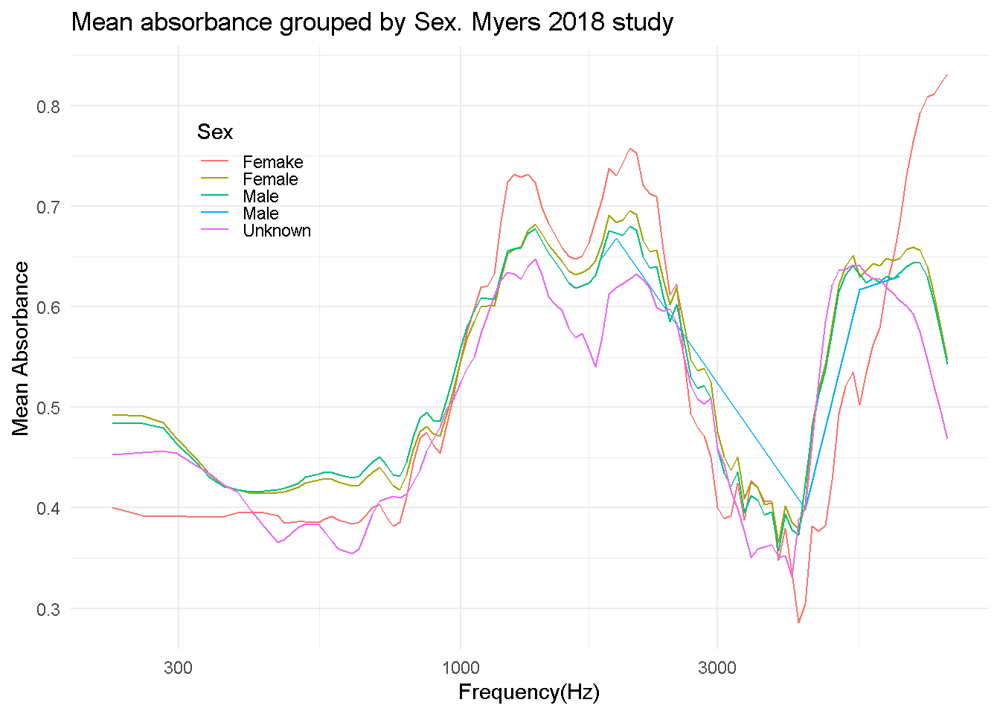

library(DBI)
library(tidyverse)
library(dbplyr)
library(dplyr)
library(RMariaDB)WAI Database Analysis + Freq. vs Mean Absorption
Using SQL Queries to create a Freq vs Mean Absorption graph.
Starting Off
In order to complete the task of copying figure one Voss (2020). my approach will be to look at the tables given from such database. From these databases,I will look at three tables specifically labeled as Subjects, PI_Info, and Measurements. I will have to join these tables together so that the information found within them are correlated with the correct publications. Specificaly from what it looks like the legend will be created from the subjects table while the measurement and PI_info tables will need to be joined accordingly.
SQL Coding
con_wai <- DBI::dbConnect(
RMariaDB::MariaDB(), host= "scidb.smith.edu",
user = "waiuser", password = "smith_waiDB",
dbname = "wai"
)
Measurements <- tbl(con_wai, "Measurements")
PI_Info <- tbl(con_wai, "PI_Info")
Subjects <- tbl(con_wai, "Subjects")
# collect(Measurements)SHOW TABLES;| Tables_in_wai |
|---|
| Codebook |
| Measurements |
| Measurements_pre2020 |
| PI_Info |
| PI_Info_OLD |
| Subjects |
| Subjects_pre2020 |
DESCRIBE PI_Info;| Field | Type | Null | Key | Default | Extra |
|---|---|---|---|---|---|
| Identifier | varchar(50) | NO | PRI | NA | |
| Year | int | NO | NA | ||
| Authors | text | NO | NA | ||
| AuthorsShortList | text | NO | NA | ||
| Title | text | NO | NA | ||
| Journal | text | NO | NA | ||
| URL | text | NO | NA | ||
| Abstract | text | NO | NA | ||
| DataSubmitterName | text | NO | NA | ||
| DataSubmitterEmail | text | NO | NA |
DESCRIBE Subjects;| Field | Type | Null | Key | Default | Extra |
|---|---|---|---|---|---|
| Identifier | varchar(50) | NO | PRI | NA | |
| SubjectNumber | int | NO | PRI | NA | |
| SessionTotal | int | NO | NA | ||
| AgeFirstMeasurement | float | YES | NA | ||
| AgeCategoryFirstMeasurement | varchar(50) | YES | NA | ||
| Sex | varchar(50) | NO | NA | ||
| Race | varchar(50) | NO | NA | ||
| Ethnicity | varchar(50) | NO | NA | ||
| LeftEarStatusFirstMeasurement | varchar(50) | NO | NA | ||
| RightEarStatusFirstMeasurement | varchar(50) | NO | NA |
SELECT *
FROM Measurements
LIMIT 0,50;| Identifier | SubjectNumber | Session | Ear | Instrument | Age | AgeCategory | EarStatus | TPP | AreaCanal | PressureCanal | SweepDirection | Frequency | Absorbance | Zmag | Zang |
|---|---|---|---|---|---|---|---|---|---|---|---|---|---|---|---|
| Abur_2014 | 1 | 1 | Left | HearID | 20 | Adult | Normal | -5 | 4.42e-05 | 0 | Ambient | 210.938 | 0.0333379 | 113780000 | -0.233504 |
| Abur_2014 | 1 | 1 | Left | HearID | 20 | Adult | Normal | -5 | 4.42e-05 | 0 | Ambient | 234.375 | 0.0315705 | 103585000 | -0.235778 |
| Abur_2014 | 1 | 1 | Left | HearID | 20 | Adult | Normal | -5 | 4.42e-05 | 0 | Ambient | 257.812 | 0.0405751 | 92951696 | -0.233482 |
| Abur_2014 | 1 | 1 | Left | HearID | 20 | Adult | Normal | -5 | 4.42e-05 | 0 | Ambient | 281.250 | 0.0438399 | 86058000 | -0.233421 |
| Abur_2014 | 1 | 1 | Left | HearID | 20 | Adult | Normal | -5 | 4.42e-05 | 0 | Ambient | 304.688 | 0.0486400 | 79492800 | -0.232931 |
| Abur_2014 | 1 | 1 | Left | HearID | 20 | Adult | Normal | -5 | 4.42e-05 | 0 | Ambient | 328.125 | 0.0527801 | 73326200 | -0.232837 |
| Abur_2014 | 1 | 1 | Left | HearID | 20 | Adult | Normal | -5 | 4.42e-05 | 0 | Ambient | 351.562 | 0.0583192 | 68793600 | -0.232115 |
| Abur_2014 | 1 | 1 | Left | HearID | 20 | Adult | Normal | -5 | 4.42e-05 | 0 | Ambient | 375.000 | 0.0638881 | 64088600 | -0.231642 |
| Abur_2014 | 1 | 1 | Left | HearID | 20 | Adult | Normal | -5 | 4.42e-05 | 0 | Ambient | 398.438 | 0.0687025 | 60200600 | -0.231356 |
| Abur_2014 | 1 | 1 | Left | HearID | 20 | Adult | Normal | -5 | 4.42e-05 | 0 | Ambient | 421.875 | 0.0833181 | 56990900 | -0.228356 |
Table for Freq and Absorbance
SELECT
PI_Info.Identifier,
PI_Info.AuthorsShortList,
Frequency,
AVG(Absorbance) AS absorbance,
PI_Info.Year
FROM PI_Info
LEFT JOIN Measurements
ON PI_Info.Identifier = Measurements.Identifier
WHERE Measurements.Identifier IN (
"Abur_2014", "Feeney_2017", "Groon_2015", "Lewis_2015", "Liu_2008",
"Rosowski_2012", "Shahnaz_2006", "Shaver_2013", "Sun_2016", "Voss_1994"
"Voss_2010", "Werner_2010")
AND Frequency BETWEEN 200 AND 8000
GROUP BY Identifier, Frequency;Table for Legend
SELECT
AuthorsShortList,
Year,
COUNT(DISTINCT CONCAT(SubjectNumber, '_' ,Ear)) AS N,
Instrument, Frequency, AVG(Absorbance) AS absorbance,
CONCAT(
AuthorsShortList, " (",Year,") ",
"N=", COUNT(DISTINCT SubjectNumber, Ear),
"; ", Instrument) AS legend_graph
FROM PI_Info AS p
LEFT JOIN Measurements AS m
ON m.Identifier = p.Identifier
WHERE p.Identifier IN (
"Abur_2014", "Feeney_2017", "Groon_2015", "Lewis_2015", "Liu_2008",
"Rosowski_2012", "Shahnaz_2006", "Shaver_2013", "Sun_2016", "Voss_1994",
"Voss_2010", "Werner_2010")
AND Frequency BETWEEN 200 AND 8000
GROUP BY Frequency, p.Identifier, m.InstrumentGraph Replicate
info |> ggplot(aes(x = Frequency, y = absorbance, group = legend_graph ,color = legend_graph)) +
labs(
title = "Mean absorbance from each publication in WAI database",
x = "Frequency (Hz)",
y = "Mean Absorbance",
) +
geom_line() +
scale_x_log10() +
theme_minimal() +
theme(
legend.position = c(0.2,0.78),
legend.key.height = unit(0.2, "cm"),
) End Description
Although the graph above doesn’t look one to one to figure one, it appears to be very similar regarding its trend and location within this plot. As discussed in the beginning, the main goal was to join PI_Info and Measurements together through the Identifier column, since this is what identifies which row is a specific publication. From this a table was created that describes the freq. and mean absorbances for each publication. The next chunk of SQL code joins measurements and PI_Info again however the main purpose of it was to get the the information to create the legend on the given graph. Finally with both tables, I was able to create a plot graph that shows the mean absorbance from each publication depending on its frequencies.
Focus on WAI Study
As a study I wanted to look into, I focused on Myers_2018 who only researched on babies/infants hearing. Because of this I can’t analyze or look at age groups so I decided that sex would be a good option for this.
SELECT *
From Subjects
WHERE Identifier = "Myers_2018"
LIMIT 0, 10| Identifier | SubjectNumber | SessionTotal | AgeFirstMeasurement | AgeCategoryFirstMeasurement | Sex | Race | Ethnicity | LeftEarStatusFirstMeasurement | RightEarStatusFirstMeasurement | SubjectNotes |
|---|---|---|---|---|---|---|---|---|---|---|
| Myers_2018 | 7 | 1 | 0.0062785 | Infant | Male | Unknown | Unknown | Unknown | Unknown | R= unknown L= unknown |
| Myers_2018 | 8 | 1 | 0.0035388 | Infant | Male | Unknown | Unknown | Abnormal | Abnormal | R= tymp pass only L= tymp pass only |
| Myers_2018 | 9 | 1 | 0.0043379 | Infant | Male | Unknown | Unknown | Normal | Normal | R= pass L= pass |
| Myers_2018 | 12 | 1 | 0.0086758 | Infant | Male | Unknown | Unknown | Unknown | Normal | R= pass L= unknown |
| Myers_2018 | 13 | 1 | 0.0085616 | Infant | Female | Unknown | Unknown | Normal | Normal | R= pass L= pass |
| Myers_2018 | 14 | 1 | 0.0094749 | Infant | Female | Unknown | Unknown | Normal | Normal | R= pass L= pass |
| Myers_2018 | 16 | 1 | 0.0046804 | Infant | Female | Unknown | Unknown | Normal | Normal | R= pass L= pass |
| Myers_2018 | 17 | 1 | 0.0052511 | Infant | Male | Unknown | Unknown | Normal | Normal | R= pass L= pass |
| Myers_2018 | 18 | 1 | 0.0028539 | Infant | Male | Unknown | Unknown | Normal | Normal | R= pass L= pass |
| Myers_2018 | 19 | 1 | 0.0026256 | Infant | Female | Unknown | Unknown | Normal | Normal | R= pass L= pass |
Similar code to what was done previously.
SELECT Measurements.Identifier,
AVG(Absorbance) AS Mean_Absorbance,
Frequency,
CONCAT(AuthorsShortList, " (", Year, ") ", " N= ",
COUNT(DISTINCT Measurements.SubjectNumber, Ear),
" ; ", Instrument) AS Label, Sex
FROM Measurements
JOIN PI_Info ON Measurements.Identifier = PI_Info.Identifier
JOIN Subjects ON Subjects.SubjectNumber = Measurements.SubjectNumber
WHERE Measurements.Identifier = "Myers_2018" AND
Frequency BETWEEN 200 AND 8000
GROUP BY Sex, Frequency, Instrument;head(Myers_2018) Identifier Mean_Absorbance Frequency Label Sex
1 Myers_2018 0.4000 226.00 Myers et al. (2018) N= 2 ; Titan Femake
2 Myers_2018 0.3920 257.33 Myers et al. (2018) N= 2 ; Titan Femake
3 Myers_2018 0.3915 280.62 Myers et al. (2018) N= 2 ; Titan Femake
4 Myers_2018 0.3925 297.30 Myers et al. (2018) N= 2 ; Titan Femake
5 Myers_2018 0.3910 324.21 Myers et al. (2018) N= 2 ; Titan Femake
6 Myers_2018 0.3905 343.49 Myers et al. (2018) N= 2 ; Titan FemakeGraph
Myers_2018 |>
ggplot(aes(x = Frequency, y = Mean_Absorbance, color = Sex)) +
geom_line() +
labs(
title = "Mean absorbance grouped by Sex. Myers 2018 study",
x = "Frequency(Hz)",
y = "Mean Absorbance",
) +
scale_x_log10() +
theme_minimal() +
theme(
legend.position = c(0.2,0.78),
legend.key.height = unit(0.2, "cm"))
Conclusion for Study
After gathering all the data from the Myers 2018 study, I am a bit confused on the final outcome of said study because I ended up with Femake as a sex and two Males. It might have been an error when I was mutating however I reset everything and still was left with such results.There is a large difference in means for “Femakes” while the other sexs re about the same similarlity.
DBI::dbDisconnect(con_wai, shutdown = TRUE)References
Voss, SE. 2019. “Resource Review.” Ear and Hearing 40 (6). https://doi.org/10.1097/AUD.0000000000000790.
WAI DataBase: Citation: doi.org/10.35482/egr.001.2022